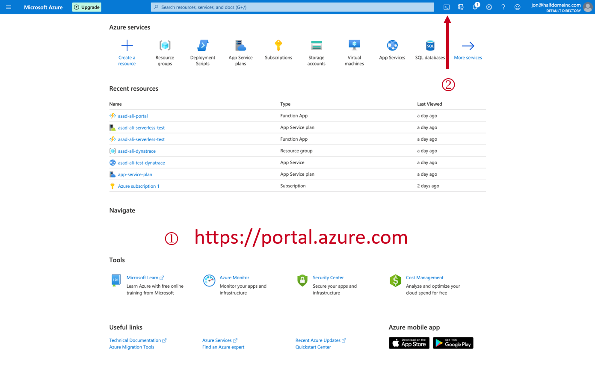
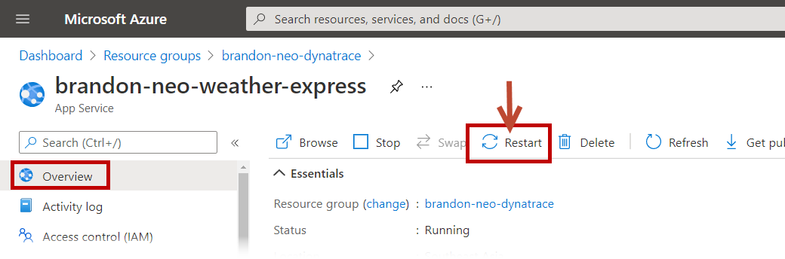
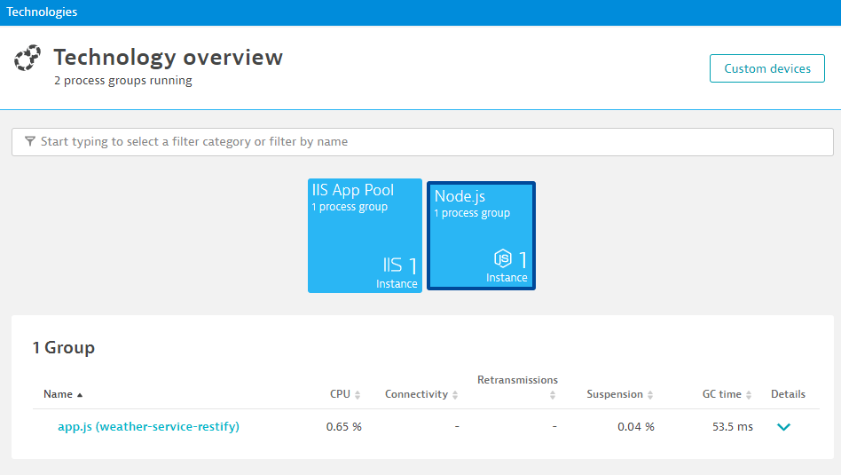
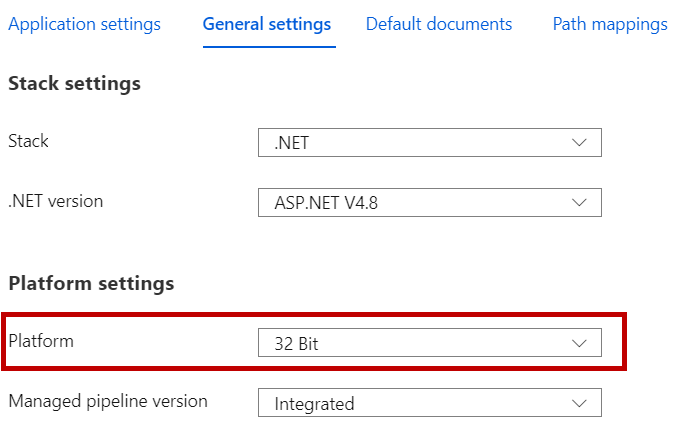
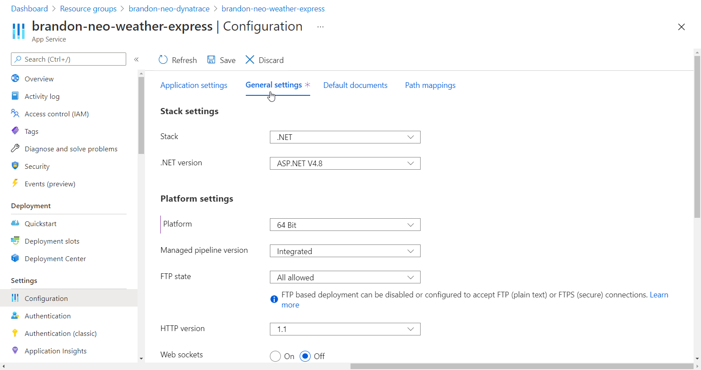
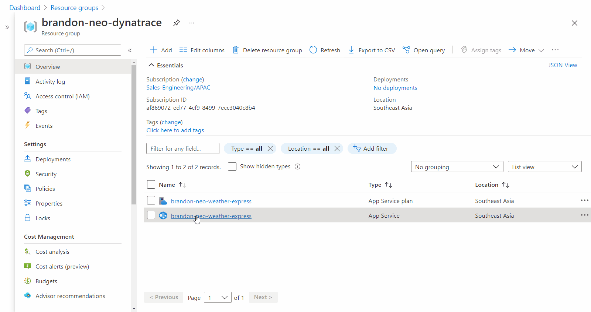

This repository contains labs for the Azure Hands-On Session.
Prerequisites
- Azure Portal Account access:
- Bring Your Own Subscription, e.g. Microsoft Visual Studio Subscription
- Access from Free Trial
What You'll Learn
- How to deploy Web App on Azure
- Learn how to use deploy Dynatrace with Azure with Site Extensions
- Using Dynatrace to validate and diagnose issues
- How to deploy Azure Function
(a) Launch Azure Cloud shell
Login to Azure Portal with your designated email.
Click on Cloud Shell icon on the top navigation bar.

Make sure that you have selected PowerShell in the left drop-down within Cloud shell.
(b) Clone github repo
Within the Cloudshell terminal, type in the below.
git clone https://github.com/Dynatrace-APAC/partner-azure.git
cd partner-azure/weather-service
The above command will download the git from the repo into your Cloud bastion host. This is setup based on your Storage Account location.
(a) Prerequisites
In addition to monitoring your Azure workloads using OneAgent, Dynatrace provides integration with Azure Monitor which adds infrastructure monitoring to gain insight even into serverless application scenarios.
You will need to have
- Sufficient permissions to register an application with your Azure AD tenant, and assign the application to a role in your Azure Subscription
- An Azure service principal to access Azure APIs
- See Documentation for full pre-requistes
(b) Create an Azure service principal
- Go to the Azure Management Portal and select Azure Active Directory.
- Select App registrations in the navigation pane of the selected Active Directory.
- Select New application registration at the top of the App registrations blade, and type the name of your application.
- Select Register.
- Copy the Application (client) ID, and save it for future retrieval. This ID is required to configure Dynatrace to connect to your Azure account.
- Select Certificates & secrets > New client secret to create a new security key.
- Type a key description and select a key duration in the Expires list.
- Select Add to save the new key, which displays the key value in the Value field. Copy the value and save it for future retrieval (along with your Client ID).
© Grant access permissions for your service principal
- You need at least reader permissions for Dynatrace to monitor your services.
(d) Grant access to an Azure subscription
- On Azure Portal, select All services > General > Subscriptions.
- In the Subscriptions blade, enter your subscription.
- Select Access control (IAM) in the subscription navigation pane.
- Select Add and enter the Reader role.
- In the Select field, paste the description name or application (client) ID obtained when creating the Azure service principal.
- Select the application and Save to grant the service principal access to your subscription.
(e) Configure Dynatrace to connect to your Azure environment
- In the desired Dynatrace environment, click Settings > Cloud and virtualization > Azure.
- Type a descriptive name for the connection.
- Enter the Client ID and Tenant ID obtained when creating the Azure service principal.
- Enter the Secret Key obtained when creating the Azure service principal.
In this exercise, you will deploy a Azure WebApp web service API that collects weather information of various cities/countries in a JSON format
Technology stack used
- NodeJS
- .NET
- Microsoft managed CosmosDB (hosted in a central location, outside of your Azure subscription)
Note: publish.ps1 is a PowerShell script written to automate the creation of the AppServicePlan, AppService and also to upload the source codes of our application. Depending on your cloud shell location, you may change the $location value within the publish.ps1 to fit your region. By default, it is set to Southeast Asia. Full list of regions are here
Example
$location="Southeast Asia"
$location="Australia East"
(a) Execute script publish.ps1 to deploy WebApp
Replace the firstname-lastname from the below command and adapt that to your own.
./publish.ps1 firstname-lastname-dynatrace firstname-lastname-weather-service
Example
./publish.ps1 brandon-neo-dynatrace brandon-neo-weather-service
Enter Y when prompted to deploy the content of the Weather Service app (partner-azure/weather-service/weather-service-app.zip)

(b) Verify Resource Group creation
Now that your app has been deployed, verify that the resource group has been deployed as well.
- Go to the Azure Portal > Resource Groups > firstname-lastname-weather-service (select the App Service one)
- Click on the link under the section Overview > Essentials > URL
- Append
/weather/current/Linzto your URL from your firstname-lastname-weather-service App Service
Example
https://brandon-neo-weather-service.azurewebsites.net/weather/current/Linz
You should get a page reflecting JSON results.

(a) Information required - EnvID, PaaS token, Server URL
We will now deploy Dynatrace OneAgent via Azure site-extensions, before we do so, please extract out the following information and paste them in a textpad/Notepad/text editor etc.
(i) PaaS Token
- Create a PaaS token, copy it and store is somewhere safe
(ii) Environment ID
- As this is a Managed environment, you will need both environment ID and server URL
- Environment ID (in bold)
Example: https://mou612.managed-sprint.dynalabs.io/e/cd783e4f-f498-4cfc-bc8b-1201bde4726a
(iii) Server URL
- Server URL for Dynatrace Managed
Example https://{your-domain}/e/{your-environment-id}/api
(b) Install Dynatrace OneAgent site extensions via Azure Portal
- In Azure Portal, go to the Weather-Service App Service
- In the left menu, scroll down to Development Tools > Extensions
- Select Add, Select Choose extension
- Select Dynatrace OneAgent
- Select Accept legal terms and then select OK to accept the legal terms
- Select OK to add the extension
- Select Dynatrace OneAgent
- Select Browse
- On the Start monitoring your App Service instance page, enter your environment ID, your API token, and your server URL
- Select Install OneAgent
- You will see this message once installation is complete in that page
The OneAgent is installed and up-to-date
Enjoy monitoring from Dynatrace.
- Go back to the Weather-Service App Service and restart the App Service application to recycle the application's worker process 
- Access the webapp's URL again and fire a few transactions
(a) Validating technology stacks
Once Dynatrace has been deployed, the OneAgent will start collecting data. It is advisible to validate if the data collected accurately represents the environment. It is not suffucent to simply check for services or purepaths.
- Access Dynatrace UI, left hand menu > Technology
- As you can see, Dynatrace automatically detects both ASP.NET and the NodeJS components 
- Go to Transactions and Services, you should see 4 services, 2 are of the .NET technology and another 2, the NodeJS technology
(b) Investigate the PurePaths
- Deep dive into some of the PurePaths

(a) Deploy Weather Express WebApp
In this exercise, you will deploy a Azure WebApp web service that renders a Web UI and provides an interactive interface to display weather information.
Technology stack used
- NodeJS
- .NET
- Redis cache (hosted in a central location, outside of your Azure subscription)
Change folder to weather-express folder with cd ../weather-express command
Note: Similar to the previous step, you may change the $location value within the publish.ps1 to fit your region. By default, it is set to Southeast Asia. Full list of regions are here
(b) Execute script publish.ps1 to deploy WebApp
Replace the firstname-lastname from the below command and adapt that to your own.
./publish.ps1 firstname-lastname-dynatrace firstname-lastname-weather-express
Example
./publish.ps1 brandon-neo-dynatrace brandon-neo-weather-express
Enter Y when prompted to deploy the content of the Weather Service app (partner-azure/weather-service/weather-express-app.zip)
© Verify Resource Group creation
Similar to the Weather Service App verfication, check on the Weather Express App App Service URL.
- Go to the Azure Portal > Resource Groups > firstname-lastname-weather-express (select the App Service one)
- Click on the link under the section Overview > Essentials > URL

- In the Weather Express web UI, click on "Current weather in Linz" and after which "Current weather in Gdansk"

Similar to instrumenting the Weather-Service WebApp, use the Azure site extensions with the previously copied PaaS token, environment ID and Server URL
Install Dynatrace OneAgent site extension via Azure Portal
- After installation is complete, go to Azure Portal and restart the App Service application to recycle the application's worker process
- Access the webapp's URL again and fire a few transactions
(a) Validating technology stacks
- Go to Transactions and Services, investigate the weather-express services

(b) Investigate the PurePaths
- Deep dive into some of the PurePaths, especially those purepaths with the URL /current

The OneAgents have a specific requirement when it comes to supportability of NodeJS versions and bitness. In the documentation, it is mentioned that only 64-bit NodeJS versions are supported.
However, when creating the Azure WebApp, it defaults to 32-bits, as seen in this configuration screen:

Enabling 64-bits NodeJS for Azure WebApps via Azure Portal
- In Azure Portal, go to the Weather-Express App Service
- In the left menu, scroll down to Settings > Configuration > General Settings
- Let's change this to 64-bits

- Another configuration is required, under Application settings tab (next to General Settings), look for
WEBSITE_NODE_DEFAULT_VERSION - Edit that line and set the value to
~10(this is not a mistake, please include ~)WEBSITE_NODE_DEFAULT_VERSION = ~10` - Click on SAVE
- Restart the App Service application to recycle the application's worker process
- Access the webapp's URL again and fire a few transactions
- You should now be able to see that the NodeJS service has been detected and instrumented
- Click on the "Current weather in Gdansk" and change the location in the URL to
/current?loc=Singaporeor/current?loc=Malaysia

Access the /current purepaths again. Investigate the /current?loc=Singapore and/or /current?loc=Malaysia and this time, Dynatrace should give you a pretty good idea where the error is coming from

(a) Resolution and Verification
In order to resolve this issue, we have to change the code. For Azure WebApps, a built-in Code editor can be used to modify codes.
To access to built-in code editor
- In Azure Portal, go to the Weather-Express App Service
- In the left menu, scroll down to Development Tools > App Service Editor (Preview)
- Click on Go and the browser-based editor will open in another tab 
- Under
WWWROOT/config/main.js, resolve the following based on the GIF - Renaming your Uri to your firstname-lastname-weather-service.azurewebsites.net/weather
- Recycle the App Service again
Once you have resolved the issue, the Weather Express Portal should be displaying the weather in Linz and any location that you enter.

Negative :What can you tell about the data collected and how do you think it will help various teams like CloudOps, App Dev teams, Business teams etc.?
(a) Creating Function App
Create a Azure App based on the following:
- Create a resource
- Search for Function App
- Click on Create
- Chooce your Resource Group - Firstname-Lastname-dynatrace (eg. Brandon-Neo-dynatrace )
- Name your Function App - Firstname-Lastname-dynatrace-function (eg. Brandon-Neo-dynatrace-function )
- Runtime Stack - .NET Core
- Version - 3.1
- Region - Your Choosen Region (eg. Australia East)
- Next
- Operating Systems - Windows
- Plan type - App service plan
- Windows Plan - Firstname-Lastname-weather-express (eg. Brandon-Neo-weather-express )
- Next
- No to AppInsights
- Create
- Once created, Go to Resource

(b) Adding A Function
Create a Azure Function based on the following:
- Select Function on the left Nav, Click on + Add
- Choose HTTP trigger
- Authorization type - Anonymous
- Code + Test
- Test/Run, Run

© Instrumenting Azure Functions via Site Extensions
Deploy and instrument the Function App with Site Extension
We hope you enjoyed this lab and found it useful. We would love your feedback!